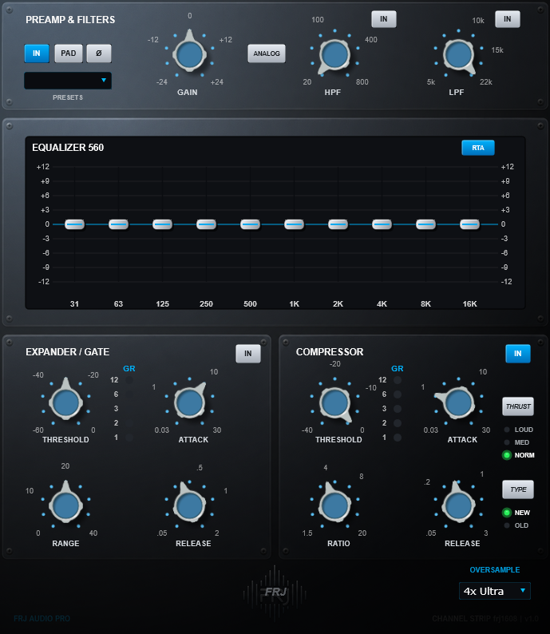
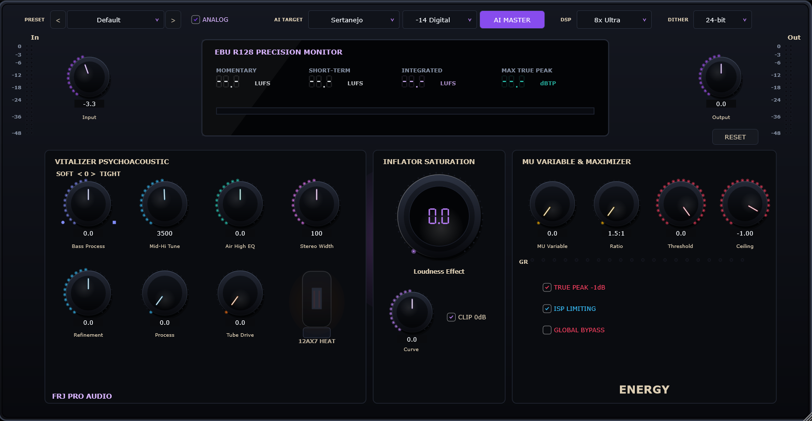

Plugins
Processamento DSP cirúrgico para mixagem e masterização.
2 PLUGINS DISPONÍVEIS

Suba o arquivostrip-pro.png
Channel Strip Completo
Strip Pro
Cadeia de processamento completa com controle de dinâmica, ganho e modelagem tonal rápida para canais individuais e barramentos.
VST3 / AU • 64-bit
Download

Suba o arquivoenergy.png
Dinâmica & Saturação
Energy
Processador de impacto, presença e excitação harmônica. Traz transientes vivos e densidade para a mixagem sem soar agressivo.
VST3 / AU • 64-bit
Download
SISTEMA
Windows 10 / 11 (64-bit)
macOS (Intel / Apple Silicon)
macOS (Intel / Apple Silicon)
FORMATOS
VST3, AU (Audio Units)
44.1kHz até 192kHz
44.1kHz até 192kHz
SUPORTE
frjproaudio@proton.me